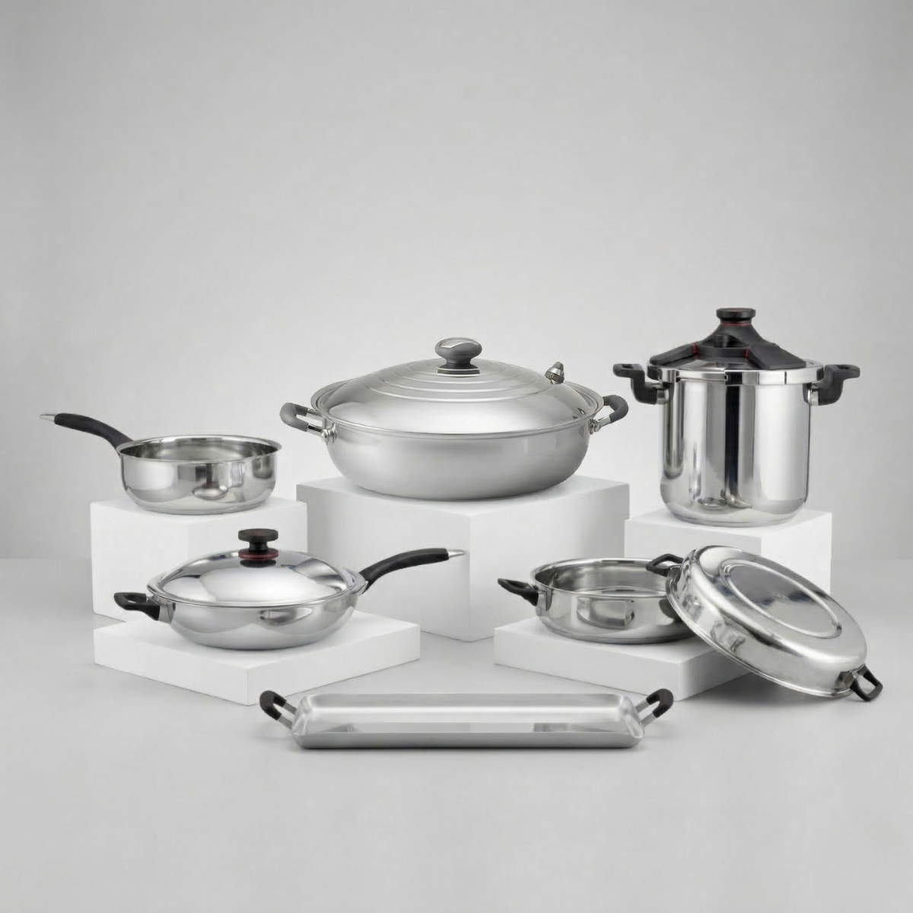
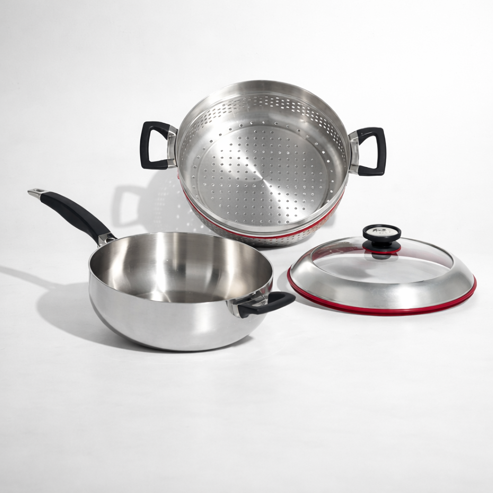
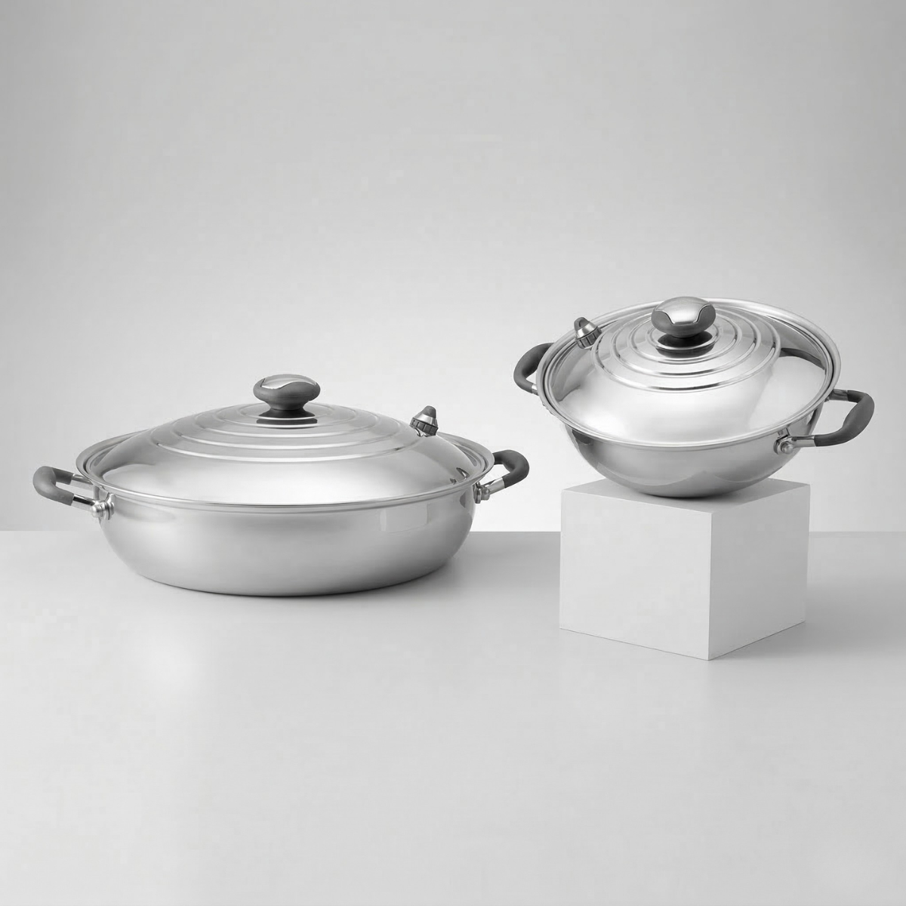
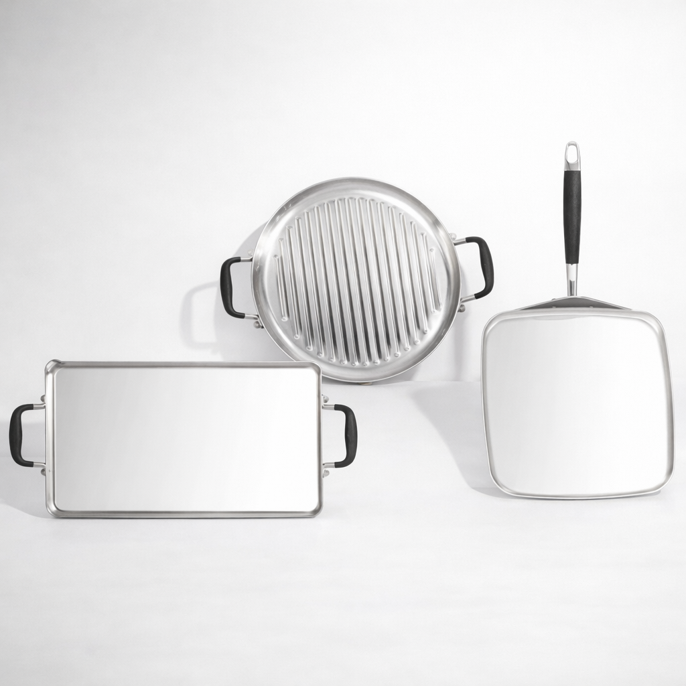
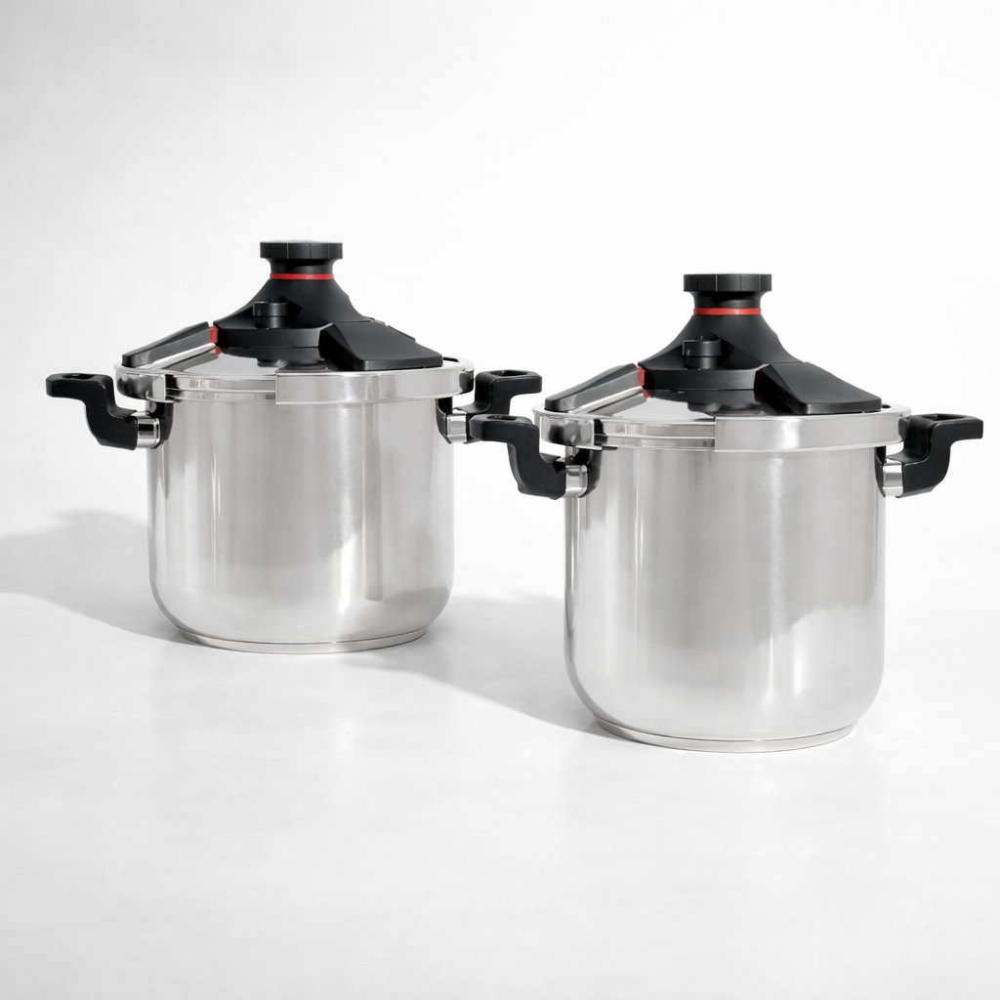
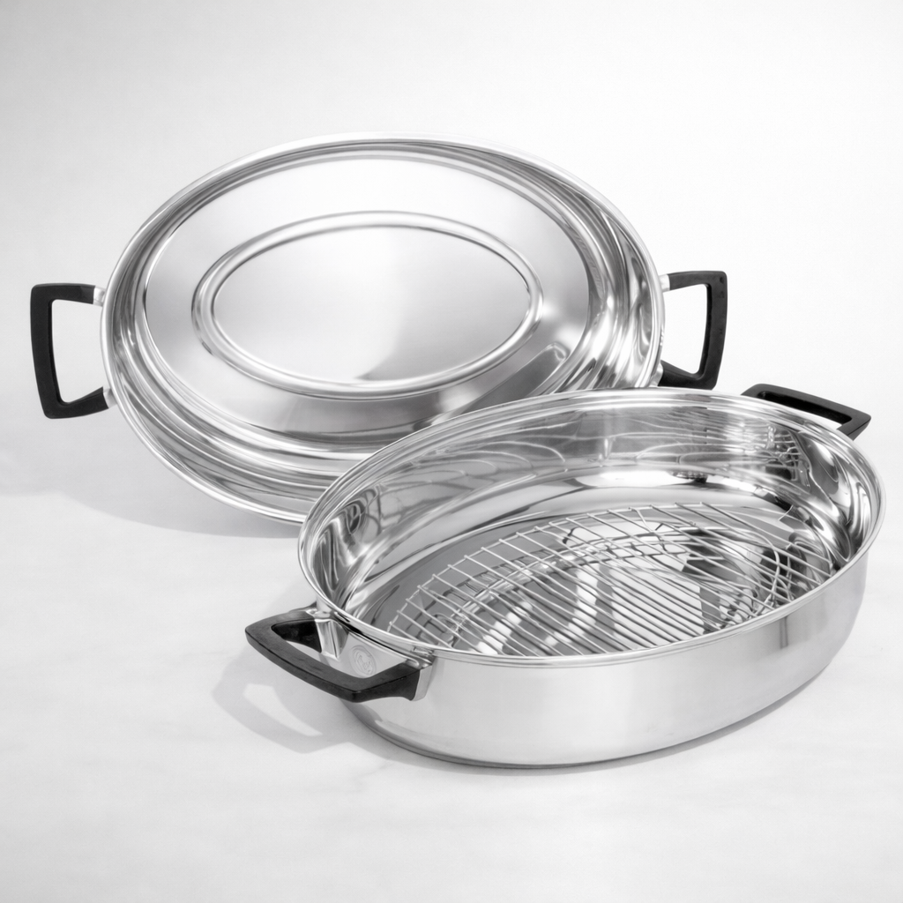

Complementa tu sistema Royal Prestige® 5 Capas con piezas individuales diseñadas para aportar más versatilidad, capacidad y opciones de preparación en una cocina premium.
Aquí encontrarás piezas individuales Royal Prestige® para ampliar tu experiencia culinaria con más funciones, más capacidad y soluciones prácticas para cocinar, servir y preparar recetas familiares.
Las piezas individuales de la línea 5 Capas de Royal Prestige® están pensadas para quienes desean ampliar su sistema de cocina con utensilios especializados que aporten más flexibilidad en el día a día.
Dentro de esta selección encontrarás opciones como MultiPan, paelleras, comales, ollas de presión y pavera, ideales para cocinar con mayor comodidad, preparar porciones familiares y adaptarte mejor a distintos estilos de receta.
Como parte del universo Royal Prestige® 5 Capas, estas piezas están orientadas a una cocina más práctica, eficiente y elegante, integrándose muy bien con una experiencia culinaria premium.
El Royal Prestige® MultiPan es una de las piezas más versátiles para complementar tu cocina. Su ficha oficial lo presenta como un sartén con 11 funciones, pensado para sumar versatilidad y multiplicar tus posibilidades en la cocina.
Te permite sellar, sofreír, asar, brasear, dorar, saltear, cocinar a fuego lento, cocer al vapor, hervir, hornear y colar. Además, es apto para estufas eléctricas, de gas o de inducción.

Las paelleras 5 Capas están hechas para quienes buscan la más alta calidad para cocinar y alimentar mejor a su familia.
La ficha oficial indica que cocinan sin aceite la mayoría de las carnes y aves, con muy poca o nada de agua, y que están disponibles en dos tamaños: 10 pulgadas y 14 pulgadas.

La línea de comales 5 Capas reúne opciones muy prácticas para resolver preparaciones cotidianas con una superficie amplia y funcional.
Son piezas especialmente útiles para desayunos, tortillas, carnes, vegetales, quesadillas, calentados y otras recetas de uso frecuente donde se valora rapidez y comodidad.

Las ollas de presión Royal Prestige® son una excelente solución para quienes buscan cocinar más rápido sin renunciar a seguridad, calidad y confianza.
La ficha oficial indica que pueden ahorrar hasta un tercio del tiempo de cocción, y que incorporan cuatro mecanismos de seguridad para cocinar con tranquilidad.

La pavera ovalada Royal Prestige® es una pieza ideal para preparaciones grandes y ocasiones especiales. Su ficha oficial la presenta como la compañera ideal para festejos durante todo el año.
Puede utilizarse sobre la estufa o en el horno, y cuenta con una dimensión de 18" x 13" / 46 cm x 33 cm.

Las piezas individuales de la línea 5 Capas son una forma inteligente de ampliar tu cocina con utensilios que responden a necesidades concretas: más superficie, más capacidad, más rapidez o más versatilidad.
Esto te permite construir una cocina más funcional, mejor adaptada a tus recetas y mucho más completa, sin perder la estética premium y la experiencia de uso que caracteriza a Royal Prestige®.
Si ya cuentas con un sistema de cocina o si deseas complementarlo poco a poco, estas piezas individuales pueden ayudarte a crear una solución más personalizada para tu hogar.
¿Quieres conocer más sistemas y accesorios disponibles? Explora el catálogo digital completo de Royal Prestige y descubre más opciones de la línea 5 Capas y otros productos para tu cocina.
Escríbenos y te ayudamos a identificar cuáles piezas individuales de la línea 5 Capas se adaptan mejor a tu cocina, tu espacio y tu estilo de preparación.